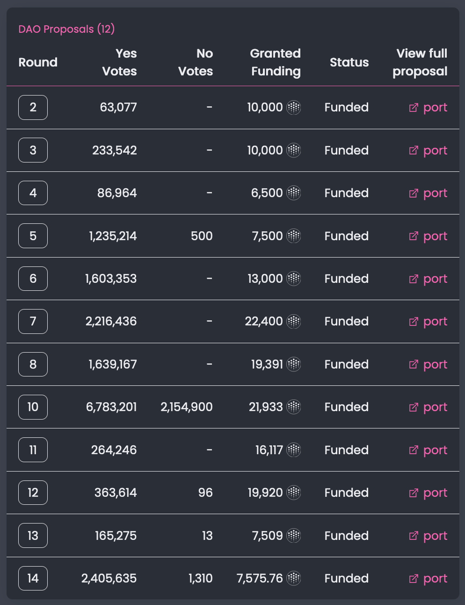
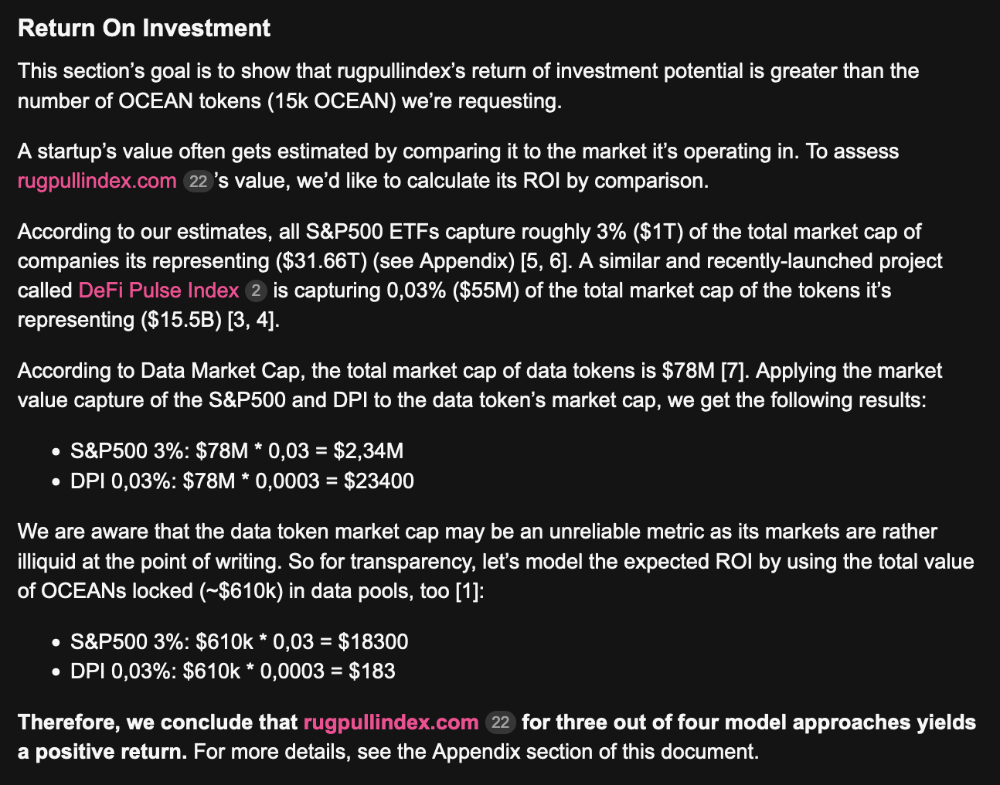
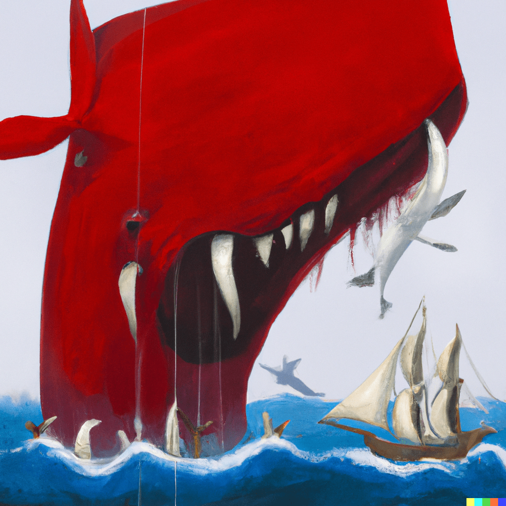
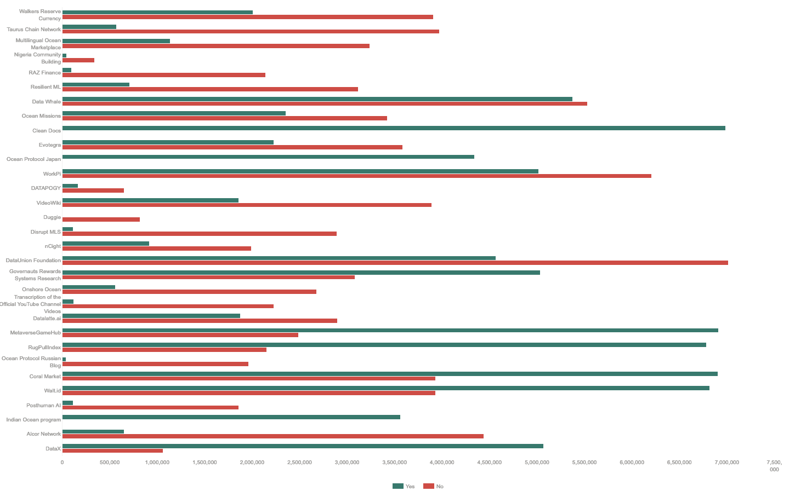
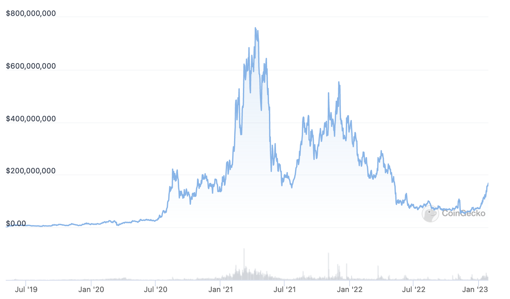

.i Between the end of 2020 and the beginning of last year, as part of a DAO-subsidized project, I worked on "Rug Pull Index" (short: RPI), a rating agency for publicly traded data sets. OceanDAO, the organization funding our work, had been set up around the same time and provided us with a fixed pool of funding every month. We, the RPI, were building core Ocean Protocol infrastructure and the OceanDAO funded our work upon request.
In detail, for each month, the Ocean Protocol fixed a pool in dollars and then requested projects to submit proposals to their DAO's online forum. On a monthly basis, projects submitted proposals publicly and the community of OCEAN token holders voted on who gets funds from the pool.
OceanDAO saw itself as a "grants funding" mechanism. This, and the fact that we, OCEAN token holders, only knew each other through online interactions, meant that project proposals consisted of us founder's track records.
As the pool size grew quickly, and since a few low-quality projects managed to sneak through the process initially, this simple path for getting funds quickly took the DAO's application process ad absurdum.
While initially, projects built rapport within the community, once an established template for supposed success became apparent, new and anonymous project founders suddenly flocked to the forum and submitting outrageous project ideas. While we, the projects who had co-founded the DAO, were modest in our promises, those who were in for the funds made outrageous claims to galvanize voters. It was during this time when RPI's month-long rapport building and community presence paid off.
Through continuously-published cash-basis accounting spreadsheets, and, hence, un-matched financial transparency, when other proposers promised questionable token deals in each round, like a great boxer, Rug Pull Index won all rounds that it "fought" in.
Looking back now, it's truly an achievement I'm proud of and that I'm grateful for having experienced it.
It was also during this time that I struggled with the challenges work threw at me.
See, it is humbling to write a 5 page project proposal, submit it to an online forum, get grilled on its validity, and then have millions of OCEAN tokens vote for or against it. What didn't make it any easier, was that, to increase voter turn out, voting was conducted on weekends.
And consider, since Rug Pull Index was a project directly furthering Ocean Protocol's vision, we were completely dependent on the DAO's funding as we couldn't go elsewhere.
I'll say that it was great having experienced what skin in the game feels like, but I'm also scared about what it forces out of others and myself.
Suddenly finding myself in the role of a politican and founder, it was during this time that I read Brené Brown's "Dare to Lead," a self-help book on developing leadership skills through vulnerability. It seemed important to me at the time as all of my other strategies for leading had proven in-effective.
So on a rare vacation in Italy, on the beach, I read it, frequently also checking my site's status to avoid down times.
The book about vulnerability and the power it draws from human psychology. It outlines an image of a warrior entering in the arena, which resonated a lot.
Posting proposals to the OceanDAO, making all our financials public, facing the tough questions and revealing the status of my startup felt awful personally, but did wonders to our voting performance. I was the warrior going to the arena, making myself vulnerable, and face the rigor of a protocol with a market capitalization of half a billion dollar.
But with the DAO's vote becoming increasingly more competitive, while its politics started to shift into toxicity sometimes, I believe there was one pivotal moment in its history that truly made it fail. The red whale of round 10.
While before, all previous rounds had been relatively relaxed, an anonymous whale downvoting every project's proposal suddenly injected mistrust in a cohesive group of founders.
See, we knew each other, and so while politics were a part of the game, faction building had lead to reliable montly income for the early projects including us.
Considering the risk we took, we felt more confident now in making it and started to professionalize.
Before round 10, the voting politics where such that all big voters were known such that a successful proposal was produced by bonding with voters over data economy visions and building personal relationships.
In one round particularly, I even remember the community getting together behind a convention for providing qualitative negative feedback (in text) over nominal negative feedback via voting. Then came round 10.
While there had been shenanigans in prior rounds, e.g., colluding to slash dishonest project submitters, these actions usually played out as open conspiracies with a majority of the community backing them.
However, when in round 10, an anonymous "red whale" downvoted nearly all projects with millions of dollars, an amount prioly un-matched, for a few hours, it looked like no project would get funding that month.

Coincidentially, this happened after a new rule introducing token burning to the mechanism where, if funds from the pool weren't allocated, they would get burned instead of being invested.
Being active on social media at the time and trying to answer why this whale voted "No", upon requesting voters' motivations, anonymous accounts on Telegram told me: "We want to burn the round's pool! There are too many scammy projects and our token investments are getting too inflated!"
Their idea, as I understood it, was that a continuous emission of OCEAN tokens from the DAO to the projects created selling pressure that devaluated investor's token returns. An absurd hypothesis up to this day, considering that the dollars sold funded twenty devoted Ocean Protocol startups innovating at break-neck speed.
Sadly, the event's post mortem was mismanaged. The offical Ocean Protocol story was that early token investors, degenerates on Telegram, had decided to throw a wrench and influence DAO policy. But an analysis of who voted was never published and the identity of the "red whale" remains anonymous.
I distrust the "offical version" of events as to me it could have been the OCEAN founders or a competing protocol, engaging in vote buying. Considering that this "red wave" hurt the OceanDAO's long-term token value, a competitor could have bought a large stash of tokens at the snapshot block number, do the voting shenanigans, but sell the token immediately back into what they consider a safer asset.

And to drive this point further, while during round 10, OCEAN's market cap had still been around $400M, it has now lost $300M with the OceanDAO having been discontinued.
Now, this is a dramatization of events! The OceanDAO continued fund allocation for another 14 months! Round 10 didn't immedately crash the price either. But it introduced such uncertainty and mistrust into the proposal process that most engaged founders started looking for exits.
The warriors in the arena, exposing their vulnerabilities monthly, stopped appearing. Despite prosperous amounts of money in the pool, the environment's unsafety made it difficult for founders to re-build trust. The lack of a balanced post mortem, and the missing signal of pro-investment token holders protecting the fragile ecosystem, made starting a startup within the OceanDAO untennable.
Had community members, before, celebrated the funding mechanism's innovation, it now dawned upon them that something semeed off. "How could this anonymous red whale do this to our work without being helt accountable? Is the crowd wise or mad?"
When that hammer came down and crushed us, it realigned an entire community and its power structure. It set the OceanDAO up for failure, sadly.
published 2023-01-28 by timdaub